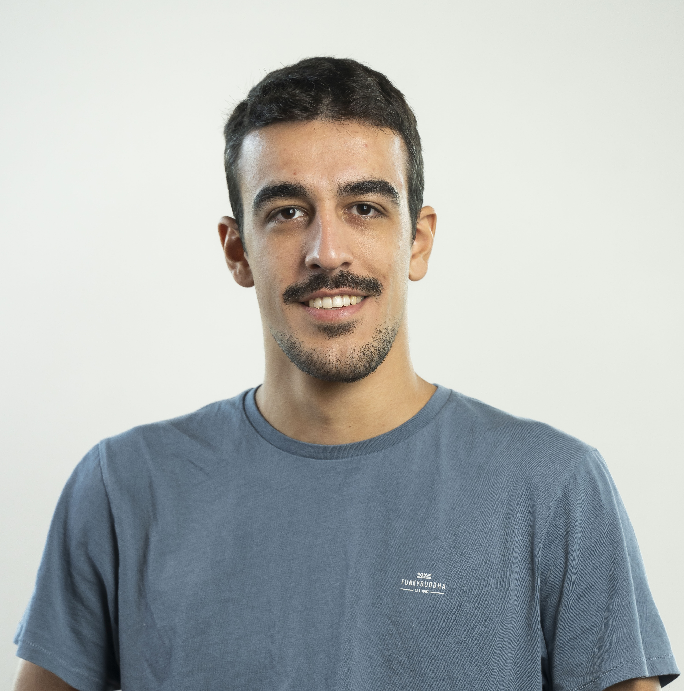

Hello! My name is Georgios but you can call me George. I am a second-year PhD student in Computer Science at the University of Maryland, College Park. My main interests are AI safety and synthetic media. I have an MEng in Electrical & Computer Engineering from the National Technical University of Athens, where I specialized in signal processing.